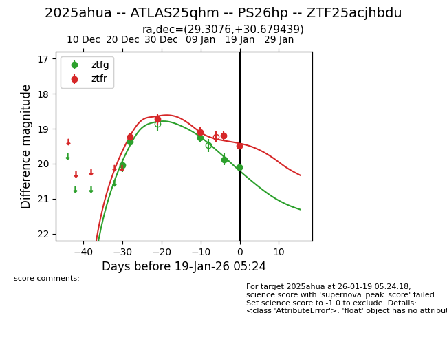
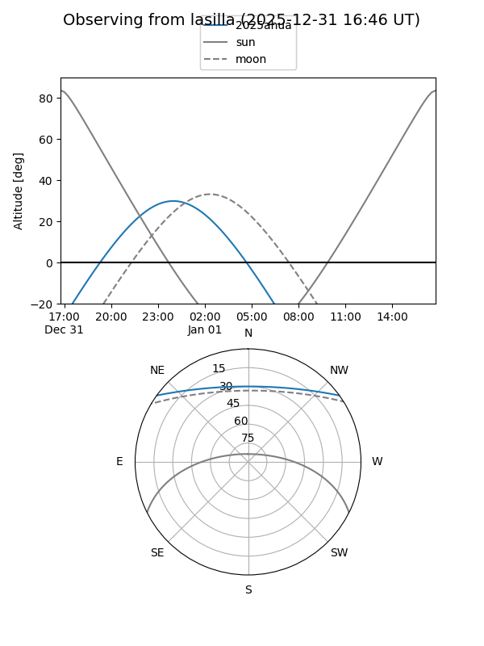
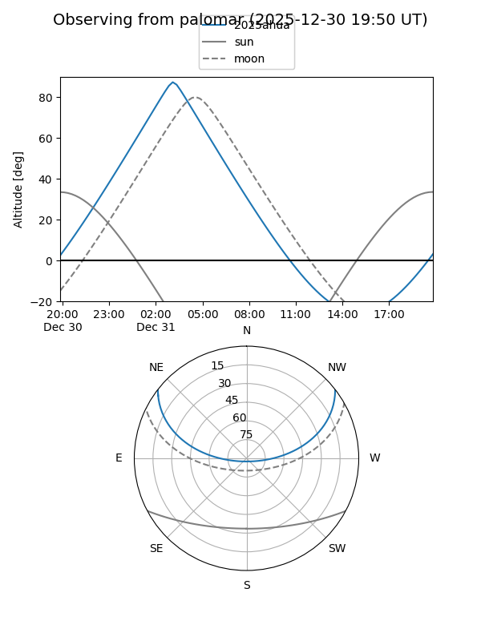
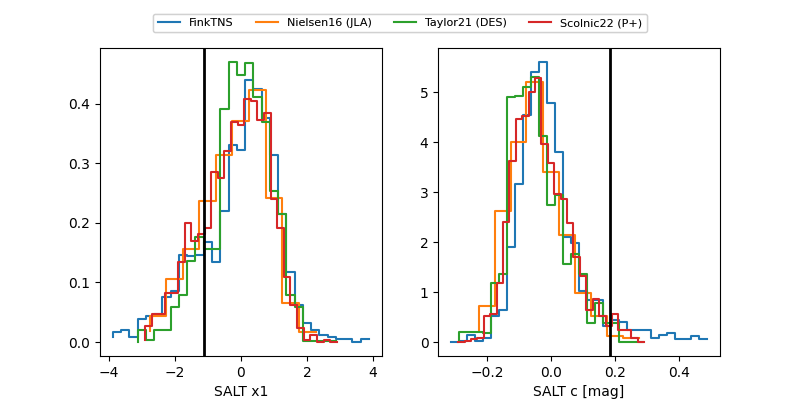

2025ahua
Target 2025ahua at 2025-12-22 15:21
Aliases and brokers:
FINK: fink-portal.org/ZTF25acjhbdu
Lasair: lasair-ztf.lsst.ac.uk/objects/ZTF25acjhbdu
ALeRCE: alerce.online/object/ZTF25acjhbdu
TNS: wis-tns.org/object/2025ahua
YSE: ziggy.ucolick.org/yse/transient_detail/2025ahua
alt names
ZTF25acjhbdu (ztf,fink_ztf)
2025ahua (tns,yse)
Coordinates:
equatorial (ra, dec) = 29.3076,+30.67949
equatorial (HMS+DMS) = 01:57:13.83,+30:40:46.15
galactic (l, b) = (139.2792,-30.09519)
Flags:
Photometry:
last ztfg=19.37, ztfr=19.24
2 ztfg, 1 ztfr detections
Lightcurve

Visibility


Additional plots
